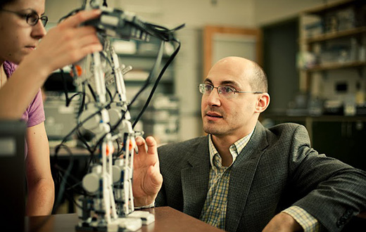
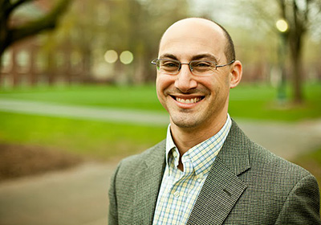

A Q&A with Bucknell engineering professor Joe Tranquillo on his year with Epicenter and the Stanford Technology Ventures Program

by Michael Pena
Originally posted on the Stanford Technology Ventures Program blog
In the world of academia, a sabbatical is a time to reflect on the past and plan for the future, take on a major project, and explore new directions in one’s career. In 2011, Joseph Tranquillo – an associate professor of biomedical and electrical engineering at Bucknell University – was searching for a place where he could immerse himself in a culture that would challenge him on all three accounts.
Tranquillo found exactly what he needed this past year at the National Center for Engineering Pathways to Innovation. Also known as the Epicenter, the national initiative’s office at Stanford University served as his academic home-away-from-home during his sabbatical.
The Epicenter, managed by the Stanford Technology Ventures Program (STVP) and the National Collegiate Inventors and Innovators Alliance (NCIIA), is a hub for the creation and sharing of entrepreneurship and innovation resources among engineering schools around the country.
As a member of the engineering faculty at Bucknell, Tranquillo was already attuned to the importance of instilling an entrepreneurial mindset in his students. So, as a visiting scholar in Stanford’s Department of Management Science and Engineering, Tranquillo conducted research at the Epicenter in which he interviewed leaders in entrepreneurship education to collect best practices and help develop a framework for diffusing them out to engineering faculty.
The Epicenter was fortunate to have such an enthusiastic educator do research that supports its mission to unleash the entrepreneurial potential of undergraduate engineering students across the United States. With his 10 months at the Epicenter and STVP recently ended, we asked Tranquillo to discuss what insights he gained during his 10 months at the Epicenter and STVP – and what his plans are for fostering entrepreneurial education back at Bucknell.
STVP: What compelled you to want to spend your sabbatical as a visiting scholar at the Epicenter?
JT: I first met Tina Seelig [Executive Director of STVP] at the 2011 NCIIA OPEN conference. The following year, I met the STVP team at the 2012 OPEN conference. The 2012 conference was also where the Epicenter was unveiled. I immediately saw the culture I wanted to be a part of and a way to contribute to the faculty development initiative of the Epicenter.
STVP: What were some of the findings from your Epicenter work?
JT: My primary project with the Epicenter was to interview leaders in entrepreneurship education to collect successful practices and tools and to help develop a framework for diffusing them out to engineering faculty.
One of the most important themes that arose from the interviews was that engineering faculty members will need both inspirational stories and concrete resources and tools to move them to integrate entrepreneurship into their engineering curricula.
A second interesting finding was the mapping of faculty “archetypes” to the traditional adopter types used by marketers – for example, what a faculty early adopter might look like. It has changed my view of how to motivate faculty.

STVP: What was the most valuable lesson you learned?
JT: There are too many lessons to communicate here, so I will focus on only three. First, I began thinking of myself as an entrepreneur. In one of my first STVP meetings, I did not self-identify as an entrepreneur. I was quickly corrected and reminded that I have created a number of academic prototypes, ranging from simple lesson plans to entirely new programs, such as the Bucknell Biomedical Engineering Department and KEEN Winter Interdisciplinary Design Experience.
The simple idea that I’m an academic entrepreneur has changed the way I think about my job as a professor. Where as before I was not consciously approaching new initiatives as an entrepreneur, I now have a series of tools and a mindset.
Second, I was able to see up-close the power of a “yes, and …” culture. I had read a lot about the idea and had used it in my classes and committees, but I have never been in a place where everyone has a “yes, and …” attitude. I found that this really fostered a “try it” attitude, and I was amazed how often an idea was expanded from a silly initial seed to a profoundly important contribution.
Third, I learned how fruitful it can be to recombine hobbies and interests with professional activities. I have always had multiple interests, but typically my private and professional lives have remained separate from one another. STVP, and Stanford in general, has such permeable boundaries that it inspired me to break down the walls between my interests. For example, I started to write a book called Moving Analogies on the combination of my love of dance and teaching engineering concepts.
STVP: What was the most surprising?
JT: There were so many surprises, that again, I cannot possibly list them all. Perhaps the most profound surprise was how generous members of the Stanford community were with their time. Tina, as well as Stanford faculty and Epicenter leaders Tom Byers and Sheri Sheppard listened to my wild ideas, encouraged me to take risks and invest in new approaches. I was able to meet some of my heroes – from Terry Winograd, a pioneer in artificial intelligence, to having regular lunches with Ron Schafer, whose classic textbook in digital-signal processing I waded through as an undergraduate.
A second surprise was my contact with groups from Aalto University in Finland and Universidad del Desarrollo and Pontificia Universidad Católica in Chile. I first met with faculty from these three universities at Stanford but later had the opportunity to visit their campuses. It was an unexpected treat to see how other universities and countries are fostering innovation ecosystems.
Third was how I was able to bring out one of my passions – dance. I did not expect to lead a contact improvisation class at Google, or consult for the Capacitor Dance Company on one of their latest projects, Synaptic Motion, or have the thrill of working with Aleta Hayes and the Chocolate Heads. Aleta and I later teamed up to teach one of the inaugural pop-up classes at the Stanford d.school, “How to Be a Cyborg.”
STVP: What’s your plan for fostering entrepreneurial education at Bucknell University?
JT: I am excited to return to Bucknell for a few very big professional reasons. First, Bucknell like many other schools, is incorporating entrepreneurship throughout the curriculum. And that extends far beyond engineering. For example, Bucknell has introduced a new minor in “arts entrepreneurship,” which will help students weave marketing and business principles – along with other skills – into their artistic efforts.
There is also energy and a great deal of work that has already gone into building a Medical Innovation Ecosystem centered at Geisinger Health Center and Bucknell. With my experience in the STVP, I am well positioned to contribute to these new initiatives in important ways.
I have also taken on the co-directorship of Bucknell’s Institute for Leadership in Technology and Management (ILTM). The program has been very successful for the past 20 years, and I have taken on the role at a particularly interesting time. Several other similar programs are forming and ILTM will serve as a template. Again, I know I will use a lot of what I learned at STVP in helping these new groups get off to a good start.
STVP: How successful do you think you’ll be?
JT: The most important mindset I took away from my sabbatical is to measure success by the metrics of impact and learning. I spent a good portion of my life with a fixed mindset – having static goals that were often defined by someone else. Before my sabbatical I was inching toward a growth mindset, one where goals are not as black and white. I was able to fully embrace this mindset at STVP and the Epicenter.
I don’t know yet if my efforts at Bucknell will be successful by fixed measures, but I am very confident that I, and Bucknell, will learn a great deal in the process, and that our efforts will be impactful.